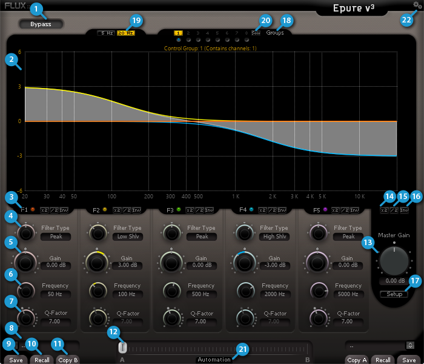

Epure
1 Epure

Epure is a state-of-the-art five-band equalizer designed to provide the absolute finest audio quality within the domain of digital audio processing. Built with our proprietary State-Space technology, carefully tuned to preserve the optimal signal to noise ratio independent of the parameter settings preventing the signal from deteriorating when the gain is reduced, makes Epure a powerful go-to processor for your day-to-day session work, as well as an efficient sharp-edged surgical precision tool for the most demanding equalizing and filtering tasks conceivable.
In addition to the supreme audio quality, the logical and comprehensive user interface includes a variety of instant shortcut functions provided to enhance and simplify the user workflow, allowing for instant and precise operation.
1.1 Bypass (1)
When pressed the inputs are routed direct to the outputs.
Default Value: Off
1.2 Graphic Display (2)
Graphical editing provided by grabbing the curves on the graphical display.
1.3 Band Activation (3)
Toggles the activation of the processing for the actual band.
Default Value: On
1.4 Filter Type (4)
All mentioned filter types are available on all of the five bands.
Default Value: Peak
Additional Filter Types:
- 12 dB per octave high pass filter (Low Cut)
- Low shelving (Low Shlv)
- Parametric (Peak)
- High shelving (High Shlv)
- 12 dB per octave low pass filter (High Cut)
1.5 Band Gain (5)
Adjusts the gain for the selected band.
Unit: dB
Value Range: -24 / +
Step: 0.
Default Value: 0 dB
1.6 Band Frequency (6)
Adjusts the center frequency for the band.
Unit: Hz
Value Range: 5 / 22k
Default Value: 50 / 200 / 500 / 2000
Step: Variable
1.7 Band Q-Factor (7)
Adjusts the frequency range affected by Gain and Frequency on the band when the Parametric filter type is used.
With a lower Q-Factor, a wider range of frequencies are affected, with a higher Q-Factor, a narrower range of frequencies are affected. The narrowest Q-Factor is 1/7 octave of 100 in displayed value and the widest is 6.67 octave. The effective Q-Factor depends on the amount of gain applied; the displayed value corresponds to the maximum gain variation (24 dB).
Example: With 6 dB gain the max Q-Factor is not 100 as displayed, but instead 10 in a regular expression to the actual Q-Factor.
Value Range: 1 / 100
Step: 0.
Default Value: 10
1.8 Preset Manager (8)
Opens a new window accessing the built-in preset manager.
1.9 Save (9)
Saves the current parameter settings as a preset.
1.10 Recall (10)
Populates all the parameters in the actual parameter section with the values from the selected preset.
1.11 Copy A / Copy B (11)
Populates all the parameters in the actual parameter section with the values from the other section. This also moves the Morphing Slider to the actual parameter section.
1.12 Morphing Slider (12)
The Morphing Slider has no unity or specific value display, it provides morphing of the current values from both of the parameter sections (A & B). A double-click on one side of the slider area toggles between the two parameter sections. The actual result of the morphed parameter settings can be saved as a new preset.